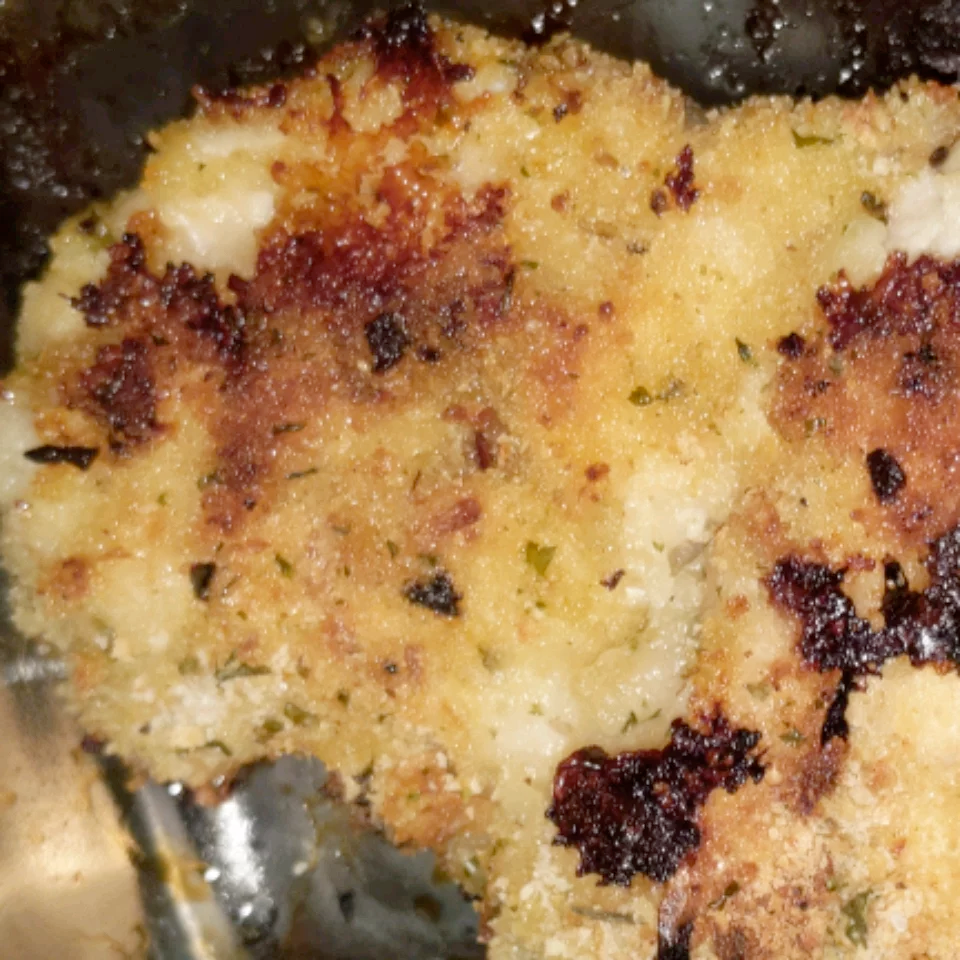

Schnitzel
Back

Description
Growing up, chicken schnitzel was a classic. I decided to make this dish oven-friendly using less oil,
and an easier cleanup. This dish tastes great with potato salad, or mashed potatoes and a nice crisp salad.
Tastes great the next day cold too! It's a family-favorite! Enjoy with fresh squeezed lemon juice.
Ingredients
- 1 tablespoon olive oil, or as desired
- 6 chicken breasts, cut in half lengthwise (butterflied)
- salt and ground black pepper to taste
- ¾ cup all-purpose flour
- 1 tablespoon paprika
- 2 eggs, beaten
- 2 cups seasoned bread crumbs
- 1 large lemon, zested
Steps
- Preheat oven to 425 degrees F (220 degrees C). Line a large baking
sheet with aluminum foil and drizzle olive oil over foil. Place baking sheet in preheated oven.
- Flatten chicken breasts, so they are all about 1/4-inch thick. Season chicken with salt and pepper.
- Mix flour and paprika together on a large plate. Beat eggs with salt and pepper in a shallow bowl. Mix bread
crumbs and lemon zest together on a separate large plate. Dredge each chicken piece in flour mixture, then egg,
and then bread crumbs mixture and set aside in 1 layer on a clean plate. Repeat with remaining chicken.
- Remove baking sheet from oven and arrange chicken in 1 layer on the sheet. Drizzle more olive oil over each
piece of coated chicken.
- Bake in the preheated oven for 5 to 6 minutes. Flip chicken and continue baking until no longer pink in the
center and the breading is lightly browned, 5 to 6 minutes more. An instant-read thermometer inserted into the
center should read at least 165 degrees F (74 degrees C).
Up